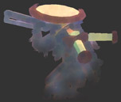
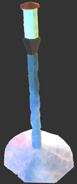
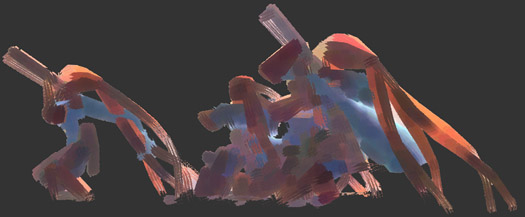

|
Making the game was not free, and running it also costs money, so If you want to donate to become a supporter of my work please do so. If you do so Ill send you a voucher that lets you create a persistent character with a few minor perks. If you cant donate, that's OK, the most important thing is that you have fun playing the game. If you take the time and have an open mind, you will find out why this is a labour of love.
If you take the time and have an open mind, you will find out why this is a labour of love.
|

|
If you make videos, blog posts, art or any other Love related work, be sure to mail me so that I can link to it.
|

|
If you donate you will become a supporter and get a mail with a 14 digit voucher code. With it you can create an account in the game that gives you some perks. They are:
They are:
Ability to move the Rally Point.
Persistent character name, look and title
Ability to use the move tool.
Adult sized characters (everyone else is kids)
Ability to get infused (very late game)
Ability to set up and run your own server (Donation of 25$ or more only.)
The idea is to give supporters something extra while not taking away from the experience of people who don't donate. Limitations to nonsupporting players like the inability to move the rally point are there to make sure they don't accidentally disrupt the game. Also since all supporting players are adults in the game its easy to see how you can ask for help (Always ask an adult!).
Also you might want to hang on to the voucher because it might give you access to some future projects.
|

|
|